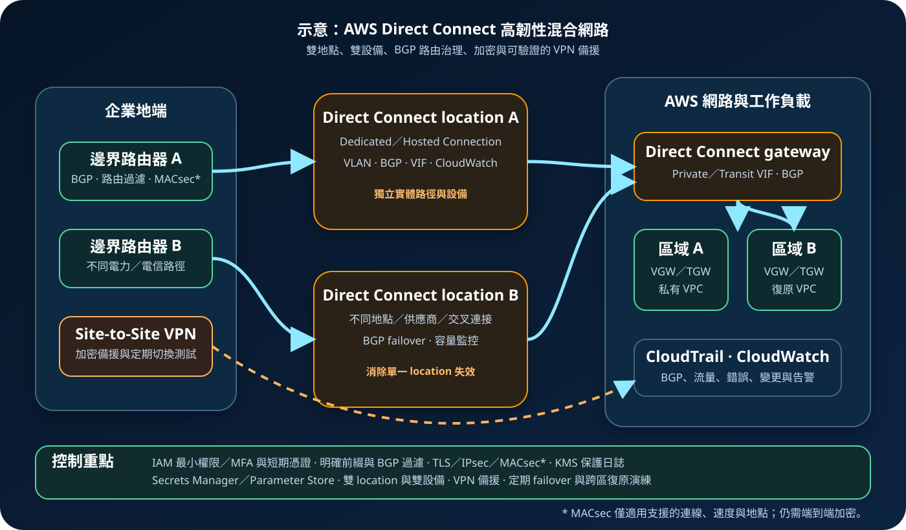

AWS Direct Connect：專線連線、BGP 路由與混合網路韌性
AWS Direct Connect 在企業網路與 AWS 之間建立不經一般公開網際網路路徑的專用網路連線，適合需要較穩定頻寬、可預測路徑或大量資料傳輸的混合架構。專線不等於自動加密、零信任或高可用；實體路徑、BGP、VIF、加密、監控與備援仍需完整設計。
作者：Dr. William｜查閱與發布：2026-10-22
服務定位
AWS Direct Connect 讓企業透過 Direct Connect location 的實體交叉連接或合作夥伴連線，把地端、資料中心或共置環境連到 AWS。相較於單純使用網際網路 VPN，Direct Connect 可提供較一致的網路路徑、專用容量選項與私有 IP 連線能力，也可能降低特定資料傳輸模式的成本。
Direct Connect 不是單一端到端電路的代名詞。完整路徑可能包含客戶路由器、電信商或合作夥伴網路、Direct Connect location、AWS 路由器、virtual interface、Direct Connect gateway、virtual private gateway 或 Transit Gateway。任何一段容量、設定或故障都可能影響服務。
核心概念與服務邊界
連線與路由元件
- Dedicated Connection：由客戶在 Direct Connect location 建立專用實體連線，常見為 1、10 或 100 Gbps 等支援速度。
- Hosted Connection：由 AWS Direct Connect Partner 提供，容量、交付與支援責任需依合作夥伴方案確認。
- Virtual Interface（VIF）：在連線上以 VLAN 與 BGP 建立邏輯介面；private、public 與 transit VIF 對應不同目的。
- Private VIF：透過 private IP 存取與 virtual private gateway 或 Direct Connect gateway 關聯的 VPC。
- Transit VIF：透過 Direct Connect gateway 連到 Transit Gateway，適合集中多 VPC 與混合網路。
- Public VIF：存取 AWS 公開服務端點；路由公告、來源前綴與安全邊界需特別治理。
- BGP：交換網路前綴與路徑屬性，決定可達性、主備路徑與故障收斂。
治理與安全元件
- Direct Connect gateway：把 VIF 與多個 virtual private gateway 或 Transit Gateway 關聯，支援跨區域連線模型。
- Resiliency Toolkit：依 Development and Test、High Resiliency、Maximum Resiliency 模型規劃與驗證連線。
- MAC Security（MACsec）：在支援的專用連線、速度與 location 上提供點對點第二層加密；不是所有組合都支援。
- VPN over Direct Connect：可用 IPsec 提供額外加密層；也可保留獨立網際網路 VPN 作路徑備援。
- CloudWatch：監看 connection state、光功率、錯誤、流量與使用率，建立容量及中斷告警。
- CloudTrail：記錄 Direct Connect 控制面 API，追蹤 connection、VIF、gateway 與關聯變更。
適合與不適合的使用情境
適合
- 地端與 AWS 間有持續、大量或對路徑穩定性敏感的資料傳輸。
- 混合應用需要私有 IP 可達性，並希望把多個 VPC 或多區域網路集中接入。
- 備份、資料湖、媒體、分析、企業系統或遷移工作負載需要可規劃的專用容量。
- 組織具備 BGP、電信線路、路由治理、容量監控與多路徑故障排除能力。
- 法規或內部政策要求降低一般網際網路路徑暴露，但仍會搭配端到端加密與存取控制。
不適合或不能單獨完成
- 流量很小、偶發或需要立即上線；Site-to-Site VPN 通常建置較快且前期成本較低。
- 把專線視為天然加密通道；一般 Direct Connect 流量不會因使用專線就自動取得端到端加密。
- 只有一條 connection、單一 customer router、單一電信路徑或單一 Direct Connect location，卻要求高可用。
- 地端與 VPC CIDR 重疊、路由責任不清或缺乏 BGP 維運能力。
- 需要應用層身分驗證、內容檢查、細粒度資料授權或 DDoS 防護；Direct Connect 只提供連線與路由。
示意故事案例：跨區供應鏈平台的混合連線
以下為示意案例，不代表特定企業或正式部署。 一家製造企業把 ERP 與工廠系統保留在地端，供應鏈入口、分析平台與資料備份部署於 AWS。每日資料量高，且白天交易不希望與一般網際網路流量競爭，因此建立兩條 Direct Connect 連線。
兩部地端路由器分別經不同電信路徑連到兩個 Direct Connect locations，避免單一設備、機房或 last-mile 故障。Transit VIF 透過 Direct Connect gateway 連到兩個區域的 Transit Gateway；正式區域承載服務，第二區域保留復原網路與可重建容量。BGP 前綴只公告核准網段，主備路徑由 local preference、AS path 與社群策略明確控制。
管理人員透過 IAM Identity Center、MFA 與短期憑證操作，連線及 VIF 變更由 IaC 與雙人覆核管理。應用機密存放於 Secrets Manager 或 Parameter Store，日誌與備份使用 KMS。敏感應用使用 TLS 或 IPsec，支援的專用連線再評估 MACsec。CloudWatch 監控連線狀態、錯誤與利用率，CloudTrail 記錄控制面變更；另保留獨立 Site-to-Site VPN，並定期執行 BGP failover、location 中斷與跨區復原演練。

建置與運作流程
- 盤點需求：列出來源與目的網段、區域、資料分類、流量方向、尖峰 Mbps／Gbps、延遲、RTO、RPO、加密與合規要求。
- 選擇連線模式：依容量、交付時間、location、合作夥伴、port-hour、跨接與支援責任選擇 Dedicated 或 Hosted Connection。
- 設計韌性：依業務重要度選擇高韌性或最大韌性模型，使用不同 customer routers、電力、電信路徑與 Direct Connect locations。
- 治理 IP 與 ASN：確認地端、VPC、Transit Gateway 與合作夥伴 CIDR 不重疊，規劃 private ASN、BGP session 與前綴上限。
- 建立實體路徑：完成 LOA-CFA、交叉連接或合作夥伴電路，核對 port、VLAN、MTU、光功率與責任交界。
- 建立 VIF：依需求建立 private、public 或 transit VIF，使用不同 VLAN、BGP peer、MD5 驗證與必要的地址配置。
- 建立 gateway 關聯：將 VIF 連到 virtual private gateway 或 Direct Connect gateway，再關聯 Transit Gateway 或核准的 VPC。
- 限制路由：只公告與接受必要前綴，設定 prefix filter、maximum-prefix、local preference、AS path 與路由摘要，避免 default route 誤導。
- 設定加密：應用使用 TLS；有 IPsec 需求時建立 VPN over Direct Connect 或獨立 VPN；符合支援條件時評估 MACsec。
- 收斂管理權限：Direct Connect、EC2、Transit Gateway 與 RAM 操作使用最小 IAM 權限，管理者採 MFA、短期憑證與變更審批。
- 保護機密：BGP 認證、自動化參數與設備機密由 Secrets Manager／Parameter Store 或企業金鑰系統管理，不寫入原始碼、網頁或工單。
- 啟用觀測：以 CloudWatch 監控狀態、錯誤、光功率與流量，集中 CloudTrail、VPC Flow Logs、Transit Gateway Flow Logs 及路由器日誌。
- 建立 VPN 備援：保留獨立網際網路 Site-to-Site VPN 或其他物理路徑，確認路由優先序、容量與故障切換時間。
- 執行 failover 測試：分別中斷 BGP、customer router、last-mile、connection、location 與 AWS 區域，量測收斂、應用影響及回復。
- 持續容量與成本治理：追蹤 port 使用率、資料傳輸、合作夥伴費、跨區傳輸、VPN、Transit Gateway、監控與超額容量。
成本、可用性與維運考量
Direct Connect 成本通常包含 port-hour、資料傳出、合作夥伴或電信商線路、交叉連接、共置、路由器、支援與可能的安裝費。若架構使用 Direct Connect gateway、Transit Gateway、跨區域資料傳輸、VPN、CloudWatch、Flow Logs、S3 或 KMS，還會產生各服務費用。實際單價依 location、連線類型、容量、來源區域與流量方向而異，應以官方定價頁及供應商報價核對。
一條 Direct Connect connection 無法滿足高可用。兩條連線若共用 customer router、last-mile、建築、電力、電信商核心或 Direct Connect location，仍可能同時中斷。高韌性架構至少要辨識設備、物理路徑、location 與 AWS 端終止點是否真正獨立，並以實際故障測試證明。
Direct Connect gateway 可簡化跨區域連線，但不會複寫應用、資料、KMS 金鑰、Secrets、DNS、路由政策或安全控制。區域復原仍需第二區域的 VPC／Transit Gateway、資料副本、容量、監控、連線關聯與切換程序。VPN 備援也必須確認頻寬足以承載最低業務量。
Direct Connect 特有資安風險與控制
- 把專線誤認為加密：預設以 TLS、IPsec 或應用層加密保護敏感資料；符合條件時再加入 MACsec，並確認完整端到端範圍。
- 單一路徑假高可用：盤點 customer router、電力、cross-connect、last-mile、電信商、location 與 AWS 裝置的共同故障點。
- BGP route leak：只允許核准前綴，設定 prefix filter、maximum-prefix、路由摘要與變更審批，避免錯誤 default route 或過寬網段。
- 路由劫持或錯誤優先序：明確設定 local preference、AS path、MED 與 BGP community，並監控非預期路徑變化。
- Public VIF 暴露面：只公告已驗證的公開前綴，限制來源、目的與服務使用；不能因流量未走一般網際網路就忽略應用防護。
- Hosted Connection 責任不清：合約要界定容量、超額、故障、監控、維護、DDoS、加密、日誌、事件通知與支援升級。
- VIF 接受錯誤：跨帳號或合作夥伴建立 VIF 時核對 owner、connection、VLAN、ASN、gateway 與預期帳號，避免誤接。
- 管理權限過大：Direct Connect、gateway association、VIF、Transit Gateway 與 RAM 權限分離，使用最小權限、MFA、短期憑證與雙人覆核。
- BGP 認證機密外洩：機密存入 Secrets Manager／Parameter Store 或受控企業系統，實施輪替，不進入 Git、IaC 輸出、標籤或公開文件。
- 缺乏控制面稽核：集中 CloudTrail，對 Create、Delete、Confirm、Associate、Allocate、Update 與 tag 變更建立告警。
- 缺乏資料面可視性：CloudWatch 監控連線與 port 指標，結合路由器 telemetry、VPC／Transit Gateway Flow Logs 與應用指標。
- 容量耗盡：針對 port 使用率、錯誤、丟包、BGP flaps 與流量成長設門檻，保留 failover 時的剩餘容量。
- VPN 備援不可用：定期切換到 VPN，驗證路由、加密、MTU、DNS、容量與應用 session，不把未測試備援當成韌性。
- MTU 與非對稱問題：端到端驗證 MTU、Path MTU Discovery、ECMP、回程路徑與狀態型防火牆，避免隱性丟包。
- 日誌洩漏敏感資訊：路由器與網路日誌不得保存 credential、Access Key、Secret Key、Token、密碼、cookie 或敏感 payload；以 KMS 與最小權限保護。
- 跨區復原只停留在文件：第二區域要具備網路關聯、路由、加密、Secrets、KMS、監控、應用容量與資料，並定期驗證 RTO／RPO。
共同責任邊界
AWS 負責 Direct Connect 服務與 AWS 全球基礎設施中由 AWS 管理的設備、軟體及實體安全。客戶負責 customer router、地端網路、CIDR、ASN、BGP、VIF、gateway 關聯、路由公告、容量、加密、監控、IAM、資料保護與復原。Direct Connect location 內的 cross-connect、共置與合作夥伴區段責任則依供應商及合約邊界劃分。
管理者應使用聯合登入、MFA、短期憑證與最小權限。正式 credential、Access Key、Secret Key、Token、密碼或 cookie 不得出現在程式碼、IaC state、設備備份、標籤、日誌或文件。應用團隊仍負責 TLS、授權、輸入驗證、資料分類、備份與事件回應。
上線與維運可執行檢查清單
- □ 已確認 Direct Connect 比單純 Site-to-Site VPN 更符合流量、穩定性、交付時間與成本需求。
- □ Dedicated／Hosted Connection 的容量、location、交付、維護與支援責任已明確。
- □ 地端、VPC、Transit Gateway、合作夥伴與復原區域 CIDR 已完成不重疊驗證。
- □ 高可用路徑使用不同 customer routers、電力、last-mile、電信路徑與 Direct Connect locations。
- □ 每個 connection、VIF、VLAN、ASN、BGP peer、owner、用途與成本中心都有資產紀錄。
- □ Private／Public／Transit VIF 類型符合需求，未以 public VIF 取代必要的私有網路設計。
- □ BGP 只公告與接受核准前綴，已設定 prefix filter、maximum-prefix 與明確的主備路徑。
- □ 已驗證 default route、路由摘要、local preference、AS path 與回程路徑不會造成旁路或黑洞。
- □ 敏感資料使用 TLS 或 IPsec；支援的專用連線已依風險評估 MACsec。
- □ Direct Connect 管理角色採最小權限、MFA、短期憑證與變更覆核。
- □ BGP 與設備機密由 Secrets Manager／Parameter Store 或受控金鑰系統管理並定期輪替。
- □ CloudTrail 已集中記錄 connection、VIF、gateway、association 與標籤變更。
- □ CloudWatch 與網路設備已監控 connection state、光功率、錯誤、流量、利用率與 BGP flaps。
- □ 已設定 port 容量與 failover 餘裕告警，備援路徑能承載最低業務需求。
- □ 已保留獨立 Site-to-Site VPN 或其他備援路徑，並完成定期切換測試。
- □ 已測試單一 BGP session、路由器、last-mile、connection、location 與區域故障。
- □ 已估算 port-hour、資料傳輸、合作夥伴、cross-connect、Transit Gateway、VPN、監控與加密成本。
- □ 第二區域可重建 gateway 關聯、路由、Secrets、KMS、DNS、監控、應用與資料，並完成 RTO／RPO 演練。
AWS 官方一手來源
- What is AWS Direct Connect?（查閱：2026-10-22）
- AWS Direct Connect virtual interfaces（查閱：2026-10-22）
- Direct Connect gateways（查閱：2026-10-22）
- AWS Direct Connect Resiliency Toolkit（查閱：2026-10-22）
- AWS Direct Connect resiliency recommendations（查閱：2026-10-22）
- MAC Security with AWS Direct Connect（查閱：2026-10-22）
- Identity and access management for AWS Direct Connect（查閱：2026-10-22）
- Monitor AWS Direct Connect resources using CloudWatch（查閱：2026-10-22）
- Log AWS Direct Connect API calls using AWS CloudTrail（查閱：2026-10-22）
- AWS Direct Connect quotas（查閱：2026-10-22）
- AWS Direct Connect pricing（查閱：2026-10-22）
- AWS Shared Responsibility Model（查閱：2026-10-22）
內容說明
本文依查閱日可用的 AWS 官方文件整理，作為基礎學習與架構討論材料；實際部署仍須依最新 location、連線速度、合作夥伴方案、VIF、MACsec 支援、BGP、配額、定價、法規、資料分類、供應商責任與復原演練結果調整。